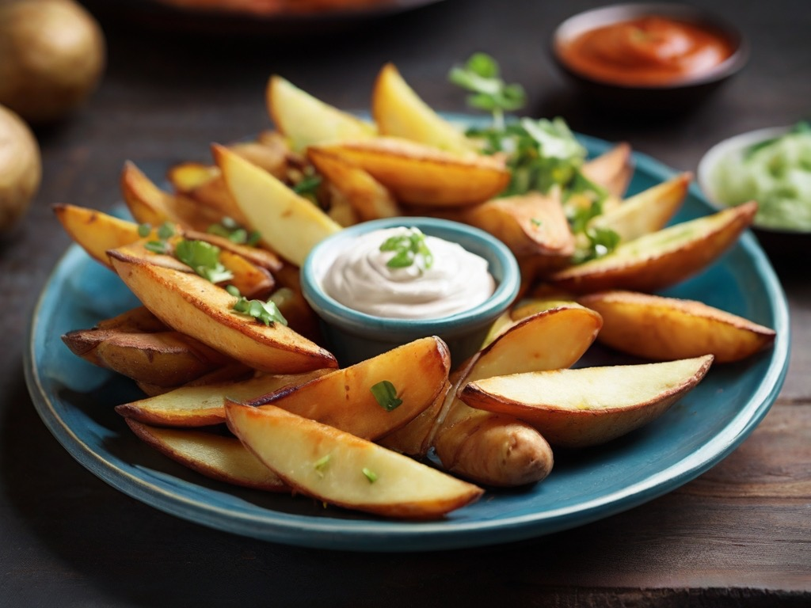

Potato Wedges

Ingredients
- 500g liitle Potatos
- Oil (oliveoil is great)
- Salt
Preperation
- Wash the potatos thorougly
- Cut them in wedges
- Put them in a bowl and add some oil and salt
- Mix it thorougly, so that all wedges are covered with oil and salt
- Put them on a baking tray with baking paper
- Bake them for 25 minutes at 200 degrees celsius
- Now you can enjoy the best potato wedges of the world and help you to survive